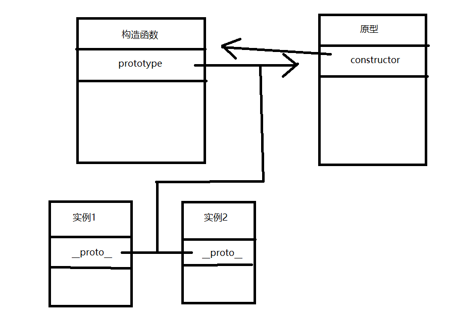

关于JavaScript原型与继承的理解
原型是JavaScript的难点之一，所以有必要把相关知识点记录下来。
私有变量和函数
在函数内部定义的变量和函数，如果不对外提供接口，外部是无法访问到的，也就是该函数的私有的变量和函数。
这样在函数对象Box外部无法访问变量color和fn，他们就变成私有的了：
静态变量和函数
当定义一个函数后通过点号 “.”为其添加的属性和函数，通过对象本身仍然可以访问得到，但是其实例却访问不到，这样的变量和函数分别被称为静态变量和静态函数。
实例变量和函数
在面向对象编程中除了一些库函数我们还是希望在对象定义的时候同时定义一些属性和方法，实例化后可以访问，js也能做到这样
为实例变量和方法添加新的方法和属性:
在box1中修改了a和fn，而在box2中没有改变，由于数组和函数都是对象，是引用类型，这就说明box1中的属性和方法与box2中的属性与方法虽然同名但却不是一个引用，而是对Box对象定义的属性和方法的一个复制。
这个对属性来说没有什么问题，但是对于方法来说问题就很大了，因为方法都是在做完全一样的功能，但是却又两份复制，如果一个函数对象有上千和实例方法，那么它的每个实例都要保持一份上千个方法的复制，这显然是不科学的，这可肿么办呢，prototype应运而生。
基本概念
- 普通函数与构造函数
其实普通函数和构造函数本质上都是函数，只是用法不大一样。函数类型 是否需要 new调用是否需要返回 是否建议使用 this关键字命名方式 普通函数 不需要 new,直接调用可以返回 不应该使用this，此时this表示window对象 驼峰式命名，首字母小写 构造函数 用 new关键字实例化不需要返回,默认返回 this，当前实例对象内部经常使用this,this指向 new创建的实例函数名建议首字母大写 prototype属性（指向原型对象）
在JavaScript中,一共有两种类型的值,原始值和对象值。每个对象的构造函数都有一个内部属性prototype,我们通常称之为原型。原型的值可以是一个对象,也可以是null。如果它的值是一个对象，则这个对象的构造函数也一定有自己的原型。这样就形成了一条线性的链，我们称之为原型链。
使用原型的好处是可以让对象实例共享它所包含的属性和方法。也就是说，不必在构造函数中添加定义对象信息，而是可以直接将这些信息添加到原型中。这样就解决了构造函数中每个方法都会在每个实例中重新创建的不科学的问题。
注意：只有函数才有prototype属性（原型），该属性指向一个对象，但对象实例有一个__proto__属性，该属性又指向了对象的构造函数的原型，所以对象.__proto__===构造函数.prototype是成立的
下面有一个例子：12345678910<script type="text/javascript">var Browser = function(){};Browser.prototype.run = function(){alert("I'm Gecko,a kernel of firefox");}var Bro = new Browser();//Bro对象本身没有run属性，所以，他就会去他的`__proto__`中去找，也就是`Browser.prototype`，最终执行了run方法Bro.run();</script>原型对象初始化的时候是空的，我们可以在里面自定义任何属性和方法，这些方法和属性都将被该构造函数所创建的对象继承。
constructor属性（指向构造函数）以及
实例一创造出来就具有constructor属性（本身是没有的，继承自原型）。原型对象内部有一个指针（constructor属性）指向构造函数:Person.prototype.constructor = Person;
所以它们的关系如下图所示：
举个例子：1234567891011121314<script type="text/javascript">function Animal(name){this.name = name;//设置对象属性}//给基类构造函数的prototype添加behavior方法Animal.prototype.behavior = function(){alert("this is a "+this.name);}var Dog = new Animal("dog");//创建Dog对象var Cat = new Animal("cat");//创建Cat对象Dog.behavior();//output "this is a dog"Cat.behavior();//output "this is a cat"alert(Dog.behavior==Cat.behavior);//output true;</script>
原型链
当从一个对象那里调取属性或方法时，如果该对象自身不存在这样的属性或方法，就会去自己关联的prototype对象那里寻找(通过实例的__proto__属性)，如果prototype没有，就会去prototype关联的前辈prototype那里寻找，如果再没有则继续查找Prototype.Prototype引用的对象，依次类推，直到Prototype.….Prototype为undefined（Object的Prototype就是undefined）从而形成了所谓的“原型链”。
原型继承
在原型链的末端，就是Object构造函数prototype属性指向的那个原型对象。这个原型对象是所有对象的祖先，这个老祖宗实现了诸如toString等所有对象天生就该具有的方法。其他内置构造函数，如Function，Boolean，String，Date和RegExp等的prototype都是从这个老祖宗传承下来的，但他们各自又定义了自身的属性和方法，从而他们的子孙就表现出各自宗族的那些特征。
另外，实例还能覆盖从原型继承来的属性，如下例子：
|
|
常用方法
| 方法名 | 说明 | 例子 |
|---|---|---|
| isPrototypeof | 判断对象是不是实例对象的原型 | 原型对象.isPrototypeof(实例对象) |
| hasOwnProperty | 监测实例对象是否含有指定属性，但不能检测到原型 | “Test”.hasOwnProperty(“split”); //false String.prototype.hasOwnProperty(“split”); //true |